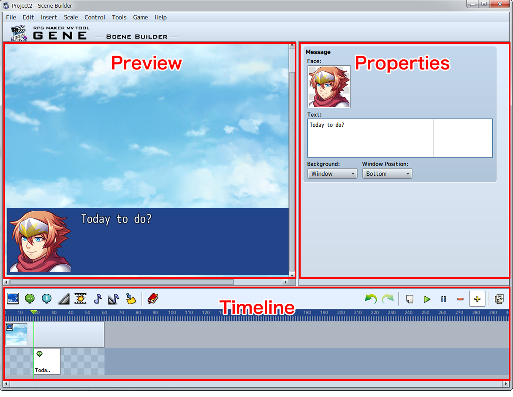

Screen
Window Part Names and Functions
The Scene Builder is split into 3 areas. Events can be managed on the timeline, and the selected event is displayed in the preview window. The property window allows configuration of events.

- Timeline
-
Edit time axes for events.
[Screen] → [Timeline] - Preview
-
Check events on the timeline. Also, preview parts of picture operations.
[Screen] → [Preview] - Properties
-
Change settings for events.
[Event Types]